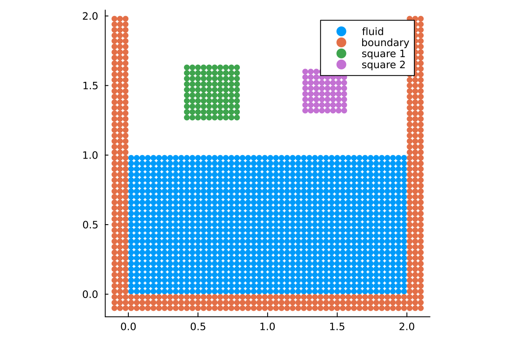
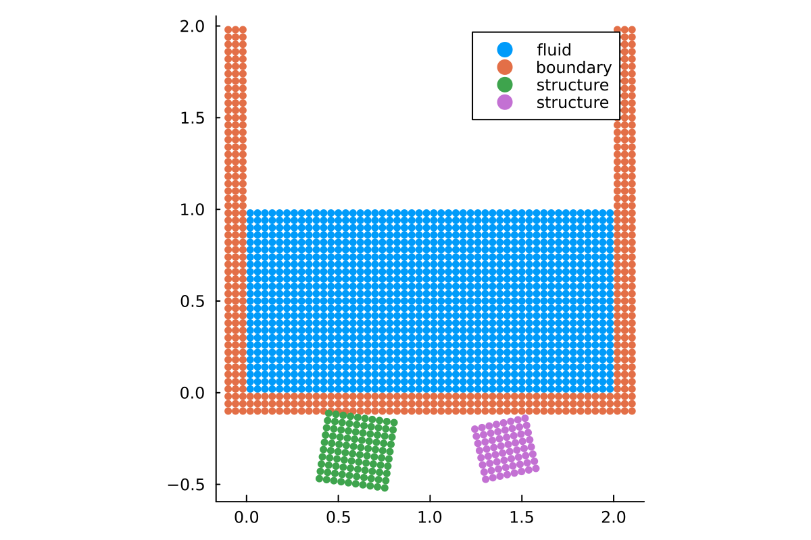
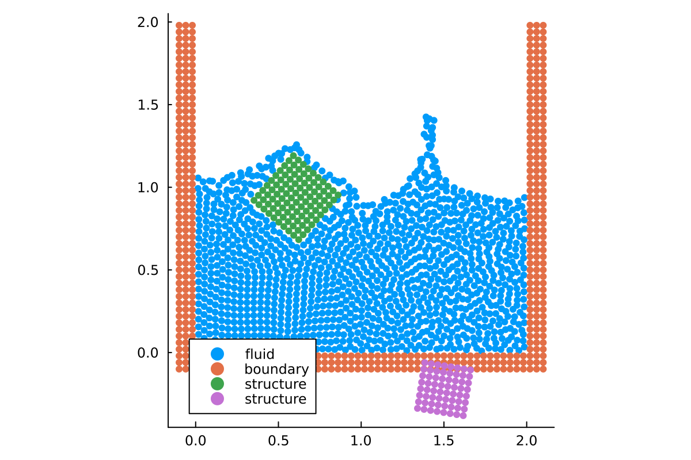
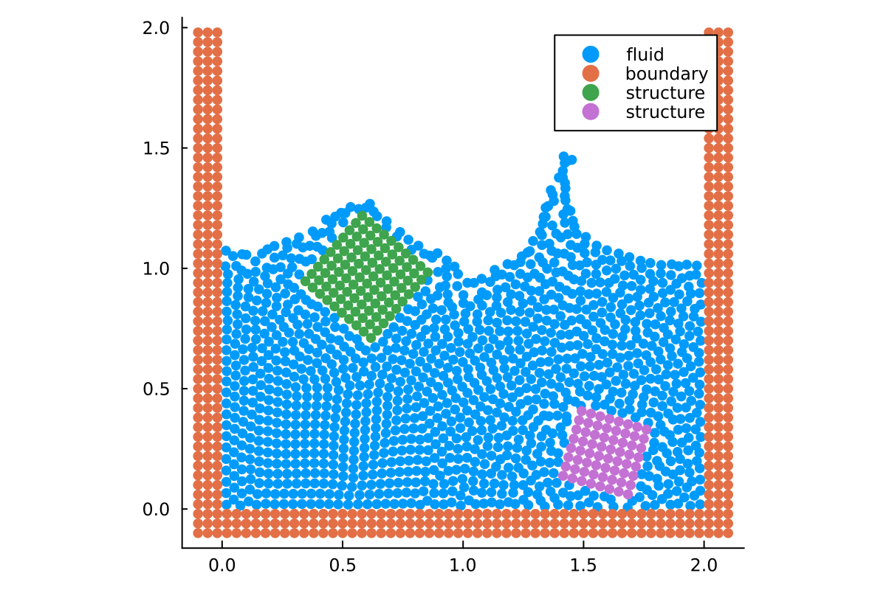
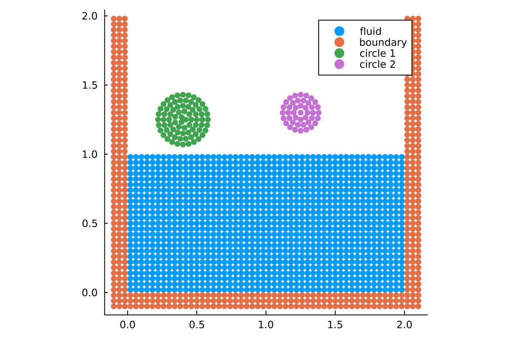
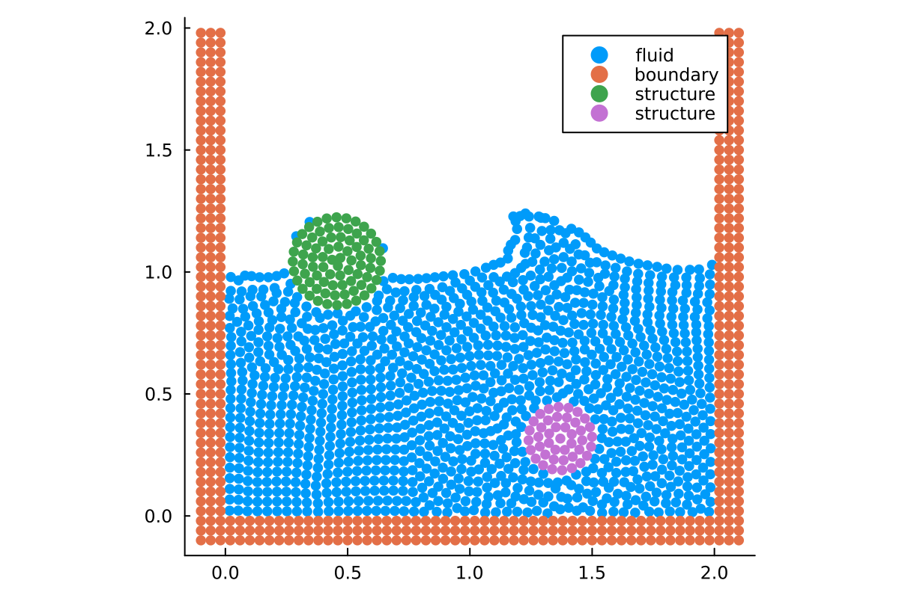
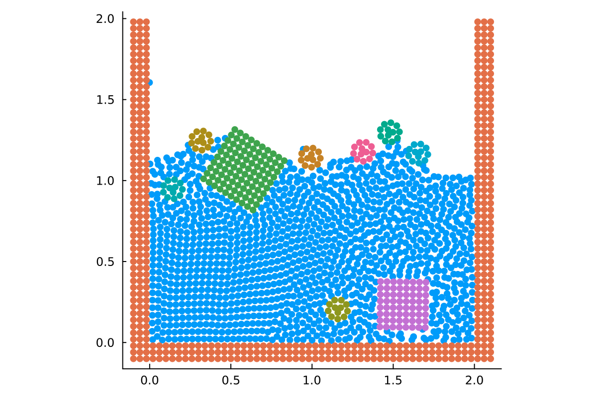
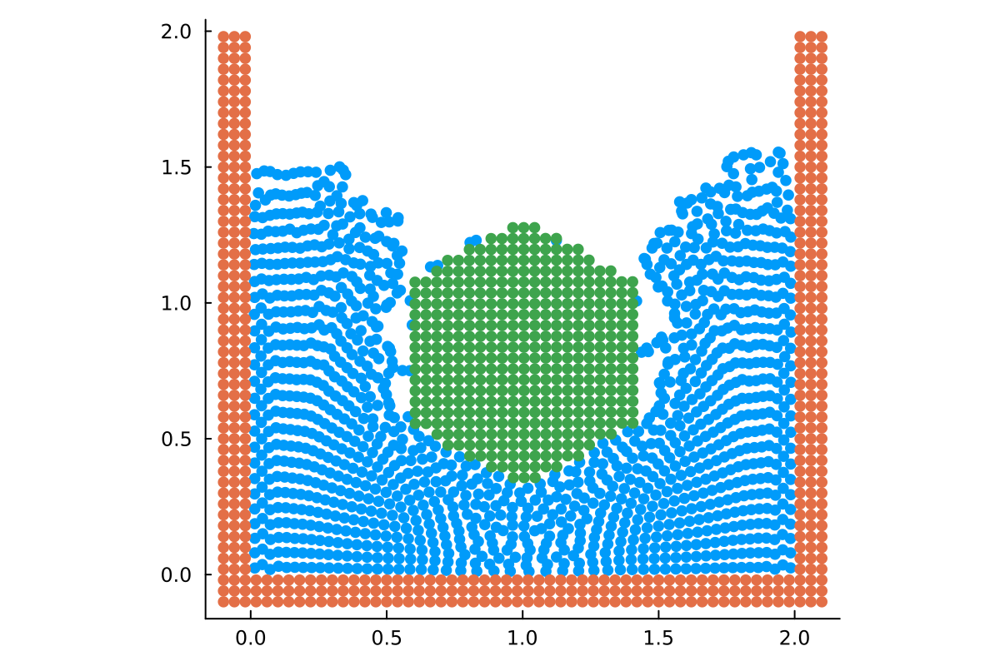

Fluid-structure interaction with rigid bodies
This tutorial introduces fluid-structure interaction (FSI) with the RigidBodySystem. We build a simplified version of examples/fsi/falling_rotating_rigid_squares_2d.jl, where two rigid squares with initial angular velocity fall into a water tank. Compared to the example file, we use a coarser resolution to see results quickly. For more details on the general setup of tank and fluid, see the tutorial on setting up a simulation.
We will build up the simulation step by step:
- Rigid bodies without any interaction.
- Fluid-structure interaction, but without rigid-rigid or rigid-wall contact.
- Full simulation with fluid-structure interaction and contact.
- Using a different geometry.
using TrixiParticles
using OrdinaryDiffEqLowStorageRK
using PlotsResolution and basic setup
As in the other tutorials, we start by defining the particle spacing. We use the same spacing for the fluid and the rigid bodies so that the coupling operates on the same particle resolution.
fluid_particle_spacing = 0.04
structure_particle_spacing = fluid_particle_spacing
boundary_layers = 3
spacing_ratio = 1The setup is a rectangular tank with an open top.
gravity = 9.81
tspan = (0.0, 1.0)
tspan2 = (0.0, 0.6) # shorter simulation time required for some simulations below
initial_fluid_size = (2.0, 1.0)
tank_size = (2.0, 2.0)
fluid_density = 1000.0
sound_speed = 100.0
state_equation = StateEquationCole(; sound_speed, reference_density=fluid_density,
exponent=1)
tank = RectangularTank(fluid_particle_spacing, initial_fluid_size, tank_size, fluid_density;
n_layers=boundary_layers, spacing_ratio,
faces=(true, true, true, false), acceleration=(0.0, -gravity),
state_equation)Rigid body geometry
Next, we define two rigid squares. Their physical density determines whether they tend to float or sink, while the initial angular velocity prescribes the rigid-body rotation.
square1_side_length = 0.4
square2_side_length = 0.3
square1_density = 600.0
square2_density = 2000.0
square1_nparticles_side = round(Int, square1_side_length / structure_particle_spacing)
square2_nparticles_side = round(Int, square2_side_length / structure_particle_spacing)
square1_bottom_left = (0.4, 1.25)
square2_bottom_left = (1.25, 1.30)
square1_angular_velocity = 5.0
square2_angular_velocity = -7.5
square1 = RectangularShape(structure_particle_spacing,
(square1_nparticles_side, square1_nparticles_side),
square1_bottom_left,
density=square1_density)
square2 = RectangularShape(structure_particle_spacing,
(square2_nparticles_side, square2_nparticles_side),
square2_bottom_left,
density=square2_density)
square1 = apply_angular_velocity(square1, square1_angular_velocity)
square2 = apply_angular_velocity(square2, square2_angular_velocity)We can visualize the initial setup.
plot(tank.fluid, tank.boundary, square1, square2,
labels=["fluid" "boundary" "square 1" "square 2"])
Fluid system
For the water, we use a standard WCSPH discretization.
fluid_smoothing_length = 1.5 * fluid_particle_spacing
fluid_smoothing_kernel = WendlandC2Kernel{2}()
fluid_density_calculator = ContinuityDensity()
viscosity = ArtificialViscosityMonaghan(alpha=0.02, beta=0.0)
density_diffusion = DensityDiffusionMolteniColagrossi(delta=0.1)
fluid_system = WeaklyCompressibleSPHSystem(tank.fluid;
smoothing_kernel=fluid_smoothing_kernel,
smoothing_length=fluid_smoothing_length,
density_calculator=fluid_density_calculator,
state_equation, viscosity, density_diffusion,
acceleration=(0.0, -gravity))Step 1: Without boundary model and contact model
In the first step, we simulate the rigid bodies without interaction with the fluid or the tank. This means we will create a Semidiscretization containing only the rigid body systems. The bodies will move according to the prescribed gravity and initial velocities, but without any collisions or fluid forces.
rigid_body_system_1_step1 = RigidBodySystem(square1; acceleration=(0.0, -gravity),
particle_spacing=structure_particle_spacing)
rigid_body_system_2_step1 = RigidBodySystem(square2; acceleration=(0.0, -gravity),
particle_spacing=structure_particle_spacing)Note that the Semidiscretization does not contain the fluid or boundary systems.
semi_step1 = Semidiscretization(rigid_body_system_1_step1, rigid_body_system_2_step1)
ode_step1 = semidiscretize(semi_step1, tspan2)
info_callback = InfoCallback(interval=100)
saving_callback = SolutionSavingCallback(dt=0.02, prefix="step1")
callbacks = CallbackSet(info_callback, saving_callback)sol_step1 = solve(ode_step1, RDPK3SpFSAL49(), save_everystep=false, callback=callbacks)Let's plot the final state of this simulation. We can see the final positions of the squares. The fluid and tank are plotted in the background to show that no interaction has taken place. As you can see, the squares fall through the fluid and the tank walls.
p = plot(tank.fluid, tank.boundary, labels=["fluid" "boundary"])
plot!(p, sol_step1, legend=:topright)
Step 2: With boundary model, without contact model
Now, we introduce fluid-structure interaction. We define a boundary_model for each rigid body, which allows them to interact with the fluid. We also add the tank boundary to the simulation. However, we still don't use a contact_model, so the rigid bodies will not collide with the tank or each other. For rigid-body FSI, the rigid particles need two separate pieces of information:
- their physical density, which is already stored in
square1andsquare2and determines the rigid-body mass and inertia, - a boundary model for the fluid coupling, which requires "hydrodynamic masses" and "hydrodynamic densities" on the rigid-body surface.
In this tutorial, we initialize the "hydrodynamic density" from the surrounding fluid density. See the docs on dummy particles for a definition for these terms.
boundary_density_calculator = AdamiPressureExtrapolation()
tank_boundary_model = BoundaryModelDummyParticles(tank.boundary; fluid_system=fluid_system,
boundary_density_calculator)
boundary_system = WallBoundarySystem(tank.boundary, tank_boundary_model)
function rigid_body_boundary_model(shape)
hydrodynamic_densities = fluid_density * ones(size(shape.density))
hydrodynamic_masses = hydrodynamic_densities *
structure_particle_spacing^ndims(fluid_system)
return BoundaryModelDummyParticles(hydrodynamic_densities, hydrodynamic_masses,
boundary_density_calculator,
fluid_smoothing_kernel,
fluid_smoothing_length;
state_equation)
end
square1_boundary_model = rigid_body_boundary_model(square1)
square2_boundary_model = rigid_body_boundary_model(square2)
rigid_body_system_1_step2 = RigidBodySystem(square1;
boundary_model=square1_boundary_model,
acceleration=(0.0, -gravity),
particle_spacing=structure_particle_spacing)
rigid_body_system_2_step2 = RigidBodySystem(square2;
boundary_model=square2_boundary_model,
acceleration=(0.0, -gravity),
particle_spacing=structure_particle_spacing)
semi_step2 = Semidiscretization(fluid_system, boundary_system,
rigid_body_system_1_step2, rigid_body_system_2_step2)
ode_step2 = semidiscretize(semi_step2, tspan)sol_step2 = solve(ode_step2, RDPK3SpFSAL49(), save_everystep=false, callback=callbacks)In the plot, you can see the interaction between the fluid and the squares. However, the squares pass through the tank bottom and each other.
plot(sol_step2)
Step 3: With contact model
Finally, we add a contact_model to handle collisions between rigid bodies and between rigid bodies and the tank. Here we also enable frictional contact, so we need UpdateCallback(interval=1) to update tangential contact history after every accepted step.
contact_model = RigidContactModel(; normal_stiffness=2.0e5,
normal_damping=150.0,
static_friction_coefficient=0.6,
kinetic_friction_coefficient=0.4,
tangential_stiffness=1.0e5,
tangential_damping=150.0,
contact_distance=2.0 * structure_particle_spacing)
rigid_body_system_1_step3 = RigidBodySystem(square1; boundary_model=square1_boundary_model,
contact_model, acceleration=(0.0, -gravity),
particle_spacing=structure_particle_spacing)
rigid_body_system_2_step3 = RigidBodySystem(square2; boundary_model=square2_boundary_model,
contact_model, acceleration=(0.0, -gravity),
particle_spacing=structure_particle_spacing)
semi_step3 = Semidiscretization(fluid_system, boundary_system,
rigid_body_system_1_step3, rigid_body_system_2_step3)
ode_step3 = semidiscretize(semi_step3, tspan)sol_step3 = solve(ode_step3, RDPK3SpFSAL49(), save_everystep=false,
callback=callbacks_step3, abstol=1e-6, reltol=1e-4, dtmax=2e-3)
████████╗██████╗ ██╗██╗ ██╗██╗██████╗ █████╗ ██████╗ ████████╗██╗ ██████╗██╗ ███████╗███████╗
╚══██╔══╝██╔══██╗██║╚██╗██╔╝██║██╔══██╗██╔══██╗██╔══██╗╚══██╔══╝██║██╔════╝██║ ██╔════╝██╔════╝
██║ ██████╔╝██║ ╚███╔╝ ██║██████╔╝███████║██████╔╝ ██║ ██║██║ ██║ █████╗ ███████╗
██║ ██╔══██╗██║ ██╔██╗ ██║██╔═══╝ ██╔══██║██╔══██╗ ██║ ██║██║ ██║ ██╔══╝ ╚════██║
██║ ██║ ██║██║██╔╝ ██╗██║██║ ██║ ██║██║ ██║ ██║ ██║╚██████╗███████╗███████╗███████║
╚═╝ ╚═╝ ╚═╝╚═╝╚═╝ ╚═╝╚═╝╚═╝ ╚═╝ ╚═╝╚═╝ ╚═╝ ╚═╝ ╚═╝ ╚═════╝╚══════╝╚══════╝╚══════╝
┌──────────────────────────────────────────────────────────────────────────────────────────────────┐
│ Semidiscretization │
│ ══════════════════ │
│ #spatial dimensions: ………………………… 2 │
│ #systems: ……………………………………………………… 4 │
│ neighborhood search: ………………………… GridNeighborhoodSearch │
│ total #particles: ………………………………… 1882 │
│ eltype: …………………………………………………………… Float64 │
│ coordinates eltype: …………………………… Float64 │
└──────────────────────────────────────────────────────────────────────────────────────────────────┘
┌──────────────────────────────────────────────────────────────────────────────────────────────────┐
│ WeaklyCompressibleSPHSystem{2} │
│ ══════════════════════════════ │
│ #particles: ………………………………………………… 1250 │
│ density calculator: …………………………… ContinuityDensity │
│ correction method: ……………………………… Nothing │
│ state equation: ……………………………………… StateEquationCole │
│ smoothing kernel: ………………………………… WendlandC2Kernel │
│ viscosity: …………………………………………………… ArtificialViscosityMonaghan{Float64}(0.02, 0.0, 0.01) │
│ density diffusion: ……………………………… DensityDiffusionMolteniColagrossi{Float64}(0.1) │
│ shifting technique: …………………………… nothing │
│ surface tension: …………………………………… nothing │
│ surface normal method: …………………… nothing │
│ acceleration: …………………………………………… [0.0, -9.81] │
│ source terms: …………………………………………… Nothing │
└──────────────────────────────────────────────────────────────────────────────────────────────────┘
┌──────────────────────────────────────────────────────────────────────────────────────────────────┐
│ WallBoundarySystem{2} │
│ ═════════════════════ │
│ #particles: ………………………………………………… 468 │
│ boundary model: ……………………………………… BoundaryModelDummyParticles(AdamiPressureExtrapolation, Nothing) │
│ movement function: ……………………………… nothing │
│ adhesion coefficient: ……………………… 0.0 │
│ color: ……………………………………………………………… 0 │
└──────────────────────────────────────────────────────────────────────────────────────────────────┘
┌──────────────────────────────────────────────────────────────────────────────────────────────────┐
│ RigidBodySystem{2} │
│ ══════════════════ │
│ #particles: ………………………………………………… 100 │
│ acceleration: …………………………………………… [0.0, -9.81] │
│ boundary model: ……………………………………… BoundaryModelDummyParticles(AdamiPressureExtrapolation, Nothing) │
└──────────────────────────────────────────────────────────────────────────────────────────────────┘
┌──────────────────────────────────────────────────────────────────────────────────────────────────┐
│ RigidBodySystem{2} │
│ ══════════════════ │
│ #particles: ………………………………………………… 64 │
│ acceleration: …………………………………………… [0.0, -9.81] │
│ boundary model: ……………………………………… BoundaryModelDummyParticles(AdamiPressureExtrapolation, Nothing) │
└──────────────────────────────────────────────────────────────────────────────────────────────────┘
┌──────────────────────────────────────────────────────────────────────────────────────────────────┐
│ SolutionSavingCallback │
│ ══════════════════════ │
│ dt: ……………………………………………………………………… 0.02 │
│ custom quantities: ……………………………… nothing │
│ save initial solution: …………………… yes │
│ save final solution: ………………………… yes │
│ overwrite solution: …………………………… no │
│ output directory: ………………………………… /home/runner/work/TrixiParticles…les.jl/docs/build/tutorials/out │
│ prefix: …………………………………………………………… step3 │
└──────────────────────────────────────────────────────────────────────────────────────────────────┘
┌──────────────────────────────────────────────────────────────────────────────────────────────────┐
│ UpdateCallback │
│ ══════════════ │
│ interval: ……………………………………………………… 1 │
└──────────────────────────────────────────────────────────────────────────────────────────────────┘
┌──────────────────────────────────────────────────────────────────────────────────────────────────┐
│ Time integration │
│ ════════════════ │
│ Start time: ………………………………………………… 0.0 │
│ Final time: ………………………………………………… 1.0 │
│ time integrator: …………………………………… RDPK3SpFSAL49 │
│ adaptive: ……………………………………………………… true │
│ abstol: …………………………………………………………… 1.0e-6 │
│ reltol: …………………………………………………………… 0.0001 │
│ controller: ………………………………………………… PIDController(beta=(0.38, -0.18,…iter=default_dt_factor_limiter) │
└──────────────────────────────────────────────────────────────────────────────────────────────────┘
┌──────────────────────────────────────────────────────────────────────────────────────────────────┐
│ Environment information │
│ ═══════════════════════ │
│ Julia version: ………………………………………… 1.13.0 │
│ parallelization backend: ……………… PolyesterBackend │
│ #threads: ……………………………………………………… 1 │
└──────────────────────────────────────────────────────────────────────────────────────────────────┘
#timesteps: 100 │ Δt: 2.0000e-03 │ sim. time: 1.9000e-01 (19.000%) │ run time: 4.8078e+00 s
#timesteps: 200 │ Δt: 1.8553e-03 │ sim. time: 3.5796e-01 (35.796%) │ run time: 6.3449e+00 s
#timesteps: 300 │ Δt: 1.3901e-03 │ sim. time: 4.8836e-01 (48.836%) │ run time: 7.8268e+00 s
#timesteps: 400 │ Δt: 2.0000e-03 │ sim. time: 6.5364e-01 (65.364%) │ run time: 9.4279e+00 s
#timesteps: 500 │ Δt: 1.2373e-03 │ sim. time: 8.2512e-01 (82.512%) │ run time: 1.1182e+01 s
#timesteps: 600 │ Δt: 2.0000e-03 │ sim. time: 9.6956e-01 (96.956%) │ run time: 1.3005e+01 s
────────────────────────────────────────────────────────────────────────────────────────────────────
Trixi simulation finished.
Final time: 1.0
Time steps: 619 (accepted) 620 (total)
────────────────────────────────────────────────────────────────────────────────────────────────────
──────────────────────────────────────────────────────────────────────────────────────────
TrixiParticles.jl Time Allocations
─────────────────────── ────────────────────────
Tot / % measured: 13.3s / 82.6% 1.22GiB / 95.1%
Section ncalls time %tot avg alloc %tot avg
──────────────────────────────────────────────────────────────────────────────────────────
kick! 5.70k 8.63s 78.4% 1.51ms 94.6MiB 7.9% 17.0KiB
system interaction 5.70k 7.53s 68.3% 1.32ms 23.6MiB 2.0% 4.24KiB
fluid1-fluid1 5.70k 5.23s 47.5% 918μs 0.00B 0.0% 0.00B
fluid1-boundary2 5.70k 736ms 6.7% 129μs 0.00B 0.0% 0.00B
fluid1-structure3 5.70k 564ms 5.1% 98.9μs 0.00B 0.0% 0.00B
fluid1-structure4 5.70k 519ms 4.7% 91.1μs 0.00B 0.0% 0.00B
structure3-fluid1 5.70k 120ms 1.1% 21.1μs 0.00B 0.0% 0.00B
structure4-fluid1 5.70k 93.6ms 0.8% 16.4μs 0.00B 0.0% 0.00B
~system interaction~ 5.70k 74.5ms 0.7% 13.1μs 23.6MiB 2.0% 4.24KiB
structure3-structure4 5.70k 63.2ms 0.6% 11.1μs 0.00B 0.0% 0.00B
structure3-boundary2 5.70k 50.6ms 0.5% 8.88μs 0.00B 0.0% 0.00B
structure4-structure3 5.70k 37.6ms 0.3% 6.60μs 0.00B 0.0% 0.00B
structure4-boundary2 5.70k 33.4ms 0.3% 5.86μs 0.00B 0.0% 0.00B
structure3-structure3 5.70k 1.19ms 0.0% 209ns 0.00B 0.0% 0.00B
structure4-structure4 5.70k 1.00ms 0.0% 176ns 0.00B 0.0% 0.00B
boundary2-fluid1 5.70k 205μs 0.0% 35.9ns 0.00B 0.0% 0.00B
boundary2-boundary2 5.70k 203μs 0.0% 35.6ns 0.00B 0.0% 0.00B
boundary2-structure4 5.70k 194μs 0.0% 34.0ns 0.00B 0.0% 0.00B
boundary2-structure3 5.70k 193μs 0.0% 33.9ns 0.00B 0.0% 0.00B
update systems and nhs 5.70k 1.09s 9.9% 190μs 71.0MiB 6.0% 12.8KiB
compute boundary pressure 17.1k 642ms 5.8% 37.6μs 0.00B 0.0% 0.00B
update nhs 5.70k 347ms 3.2% 60.9μs 71.0MiB 6.0% 12.8KiB
~update systems and nhs~ 5.70k 55.6ms 0.5% 9.75μs 1.55KiB 0.0% 0.28B
inverse state equation 17.1k 40.0ms 0.4% 2.34μs 0.00B 0.0% 0.00B
update density diffusion 5.70k 215μs 0.0% 37.7ns 0.00B 0.0% 0.00B
source terms 17.1k 12.6ms 0.1% 739ns 0.00B 0.0% 0.00B
~kick!~ 5.70k 7.25ms 0.1% 1.27μs 1.55KiB 0.0% 0.28B
reset ∂v/∂t 5.70k 3.06ms 0.0% 537ns 0.00B 0.0% 0.00B
save solution 50 2.22s 20.2% 44.5ms 1.06GiB 91.2% 21.7MiB
~save solution~ 50 1.08s 9.8% 21.5ms 24.7MiB 2.1% 505KiB
write to vtk 200 1.06s 9.6% 5.31ms 1.03GiB 88.8% 5.29MiB
update dvdu 50 75.9ms 0.7% 1.52ms 3.54MiB 0.3% 72.6KiB
update systems 50 9.35ms 0.1% 187μs 653KiB 0.1% 13.1KiB
update callback 619 142ms 1.3% 229μs 10.3MiB 0.9% 17.0KiB
update systems and nhs 619 119ms 1.1% 192μs 7.91MiB 0.7% 13.1KiB
~update callback~ 619 23.1ms 0.2% 37.4μs 2.35MiB 0.2% 3.89KiB
drift! 5.70k 16.0ms 0.1% 2.81μs 0.00B 0.0% 0.00B
──────────────────────────────────────────────────────────────────────────────────────────The plot now shows the full simulation. The squares collide with the tank bottom and each other.
plot(sol_step3)
Step 4: Different geometry
The same setup can be used with different geometries. Here, we replace the squares with circles.
circle1_radius = 0.2
circle2_radius = 0.15
circle1_center = (0.4, 1.25)
circle2_center = (1.25, 1.30)
circle1 = SphereShape(structure_particle_spacing, circle1_radius, circle1_center,
square1_density, sphere_type=RoundSphere())
circle2 = SphereShape(structure_particle_spacing, circle2_radius, circle2_center,
square2_density, sphere_type=RoundSphere())
circle1 = apply_angular_velocity(circle1, square1_angular_velocity)
circle2 = apply_angular_velocity(circle2, square2_angular_velocity)Let's visualize the new setup.
plot(tank.fluid, tank.boundary, circle1, circle2,
labels=["fluid" "boundary" "circle 1" "circle 2"])
circle1_boundary_model = rigid_body_boundary_model(circle1)
circle2_boundary_model = rigid_body_boundary_model(circle2)
rigid_body_system_1_step4 = RigidBodySystem(circle1; boundary_model=circle1_boundary_model,
contact_model, acceleration=(0.0, -gravity),
particle_spacing=structure_particle_spacing)
rigid_body_system_2_step4 = RigidBodySystem(circle2; boundary_model=circle2_boundary_model,
contact_model, acceleration=(0.0, -gravity),
particle_spacing=structure_particle_spacing)
semi_step4 = Semidiscretization(fluid_system, boundary_system,
rigid_body_system_1_step4, rigid_body_system_2_step4)
ode_step4 = semidiscretize(semi_step4, tspan)sol_step4 = solve(ode_step4, RDPK3SpFSAL49(), save_everystep=false,
callback=callbacks_step4, abstol=1e-6, reltol=1e-4, dtmax=2e-3)
████████╗██████╗ ██╗██╗ ██╗██╗██████╗ █████╗ ██████╗ ████████╗██╗ ██████╗██╗ ███████╗███████╗
╚══██╔══╝██╔══██╗██║╚██╗██╔╝██║██╔══██╗██╔══██╗██╔══██╗╚══██╔══╝██║██╔════╝██║ ██╔════╝██╔════╝
██║ ██████╔╝██║ ╚███╔╝ ██║██████╔╝███████║██████╔╝ ██║ ██║██║ ██║ █████╗ ███████╗
██║ ██╔══██╗██║ ██╔██╗ ██║██╔═══╝ ██╔══██║██╔══██╗ ██║ ██║██║ ██║ ██╔══╝ ╚════██║
██║ ██║ ██║██║██╔╝ ██╗██║██║ ██║ ██║██║ ██║ ██║ ██║╚██████╗███████╗███████╗███████║
╚═╝ ╚═╝ ╚═╝╚═╝╚═╝ ╚═╝╚═╝╚═╝ ╚═╝ ╚═╝╚═╝ ╚═╝ ╚═╝ ╚═╝ ╚═════╝╚══════╝╚══════╝╚══════╝
┌──────────────────────────────────────────────────────────────────────────────────────────────────┐
│ Semidiscretization │
│ ══════════════════ │
│ #spatial dimensions: ………………………… 2 │
│ #systems: ……………………………………………………… 4 │
│ neighborhood search: ………………………… GridNeighborhoodSearch │
│ total #particles: ………………………………… 1839 │
│ eltype: …………………………………………………………… Float64 │
│ coordinates eltype: …………………………… Float64 │
└──────────────────────────────────────────────────────────────────────────────────────────────────┘
┌──────────────────────────────────────────────────────────────────────────────────────────────────┐
│ WeaklyCompressibleSPHSystem{2} │
│ ══════════════════════════════ │
│ #particles: ………………………………………………… 1250 │
│ density calculator: …………………………… ContinuityDensity │
│ correction method: ……………………………… Nothing │
│ state equation: ……………………………………… StateEquationCole │
│ smoothing kernel: ………………………………… WendlandC2Kernel │
│ viscosity: …………………………………………………… ArtificialViscosityMonaghan{Float64}(0.02, 0.0, 0.01) │
│ density diffusion: ……………………………… DensityDiffusionMolteniColagrossi{Float64}(0.1) │
│ shifting technique: …………………………… nothing │
│ surface tension: …………………………………… nothing │
│ surface normal method: …………………… nothing │
│ acceleration: …………………………………………… [0.0, -9.81] │
│ source terms: …………………………………………… Nothing │
└──────────────────────────────────────────────────────────────────────────────────────────────────┘
┌──────────────────────────────────────────────────────────────────────────────────────────────────┐
│ WallBoundarySystem{2} │
│ ═════════════════════ │
│ #particles: ………………………………………………… 468 │
│ boundary model: ……………………………………… BoundaryModelDummyParticles(AdamiPressureExtrapolation, Nothing) │
│ movement function: ……………………………… nothing │
│ adhesion coefficient: ……………………… 0.0 │
│ color: ……………………………………………………………… 0 │
└──────────────────────────────────────────────────────────────────────────────────────────────────┘
┌──────────────────────────────────────────────────────────────────────────────────────────────────┐
│ RigidBodySystem{2} │
│ ══════════════════ │
│ #particles: ………………………………………………… 78 │
│ acceleration: …………………………………………… [0.0, -9.81] │
│ boundary model: ……………………………………… BoundaryModelDummyParticles(AdamiPressureExtrapolation, Nothing) │
└──────────────────────────────────────────────────────────────────────────────────────────────────┘
┌──────────────────────────────────────────────────────────────────────────────────────────────────┐
│ RigidBodySystem{2} │
│ ══════════════════ │
│ #particles: ………………………………………………… 43 │
│ acceleration: …………………………………………… [0.0, -9.81] │
│ boundary model: ……………………………………… BoundaryModelDummyParticles(AdamiPressureExtrapolation, Nothing) │
└──────────────────────────────────────────────────────────────────────────────────────────────────┘
┌──────────────────────────────────────────────────────────────────────────────────────────────────┐
│ SolutionSavingCallback │
│ ══════════════════════ │
│ dt: ……………………………………………………………………… 0.02 │
│ custom quantities: ……………………………… nothing │
│ save initial solution: …………………… yes │
│ save final solution: ………………………… yes │
│ overwrite solution: …………………………… no │
│ output directory: ………………………………… /home/runner/work/TrixiParticles…les.jl/docs/build/tutorials/out │
│ prefix: …………………………………………………………… step4 │
└──────────────────────────────────────────────────────────────────────────────────────────────────┘
┌──────────────────────────────────────────────────────────────────────────────────────────────────┐
│ UpdateCallback │
│ ══════════════ │
│ interval: ……………………………………………………… 1 │
└──────────────────────────────────────────────────────────────────────────────────────────────────┘
┌──────────────────────────────────────────────────────────────────────────────────────────────────┐
│ Time integration │
│ ════════════════ │
│ Start time: ………………………………………………… 0.0 │
│ Final time: ………………………………………………… 1.0 │
│ time integrator: …………………………………… RDPK3SpFSAL49 │
│ adaptive: ……………………………………………………… true │
│ abstol: …………………………………………………………… 1.0e-6 │
│ reltol: …………………………………………………………… 0.0001 │
│ controller: ………………………………………………… PIDController(beta=(0.38, -0.18,…iter=default_dt_factor_limiter) │
└──────────────────────────────────────────────────────────────────────────────────────────────────┘
┌──────────────────────────────────────────────────────────────────────────────────────────────────┐
│ Environment information │
│ ═══════════════════════ │
│ Julia version: ………………………………………… 1.13.0 │
│ parallelization backend: ……………… PolyesterBackend │
│ #threads: ……………………………………………………… 1 │
└──────────────────────────────────────────────────────────────────────────────────────────────────┘
#timesteps: 100 │ Δt: 2.0000e-03 │ sim. time: 1.9000e-01 (19.000%) │ run time: 4.5225e+00 s
#timesteps: 200 │ Δt: 2.0000e-03 │ sim. time: 3.9000e-01 (39.000%) │ run time: 6.0082e+00 s
#timesteps: 300 │ Δt: 2.0000e-03 │ sim. time: 5.9000e-01 (59.000%) │ run time: 7.6554e+00 s
#timesteps: 400 │ Δt: 2.0000e-03 │ sim. time: 7.3169e-01 (73.169%) │ run time: 9.3245e+00 s
#timesteps: 500 │ Δt: 6.0847e-04 │ sim. time: 8.4176e-01 (84.176%) │ run time: 1.1065e+01 s
#timesteps: 600 │ Δt: 1.8165e-03 │ sim. time: 9.7536e-01 (97.536%) │ run time: 1.2744e+01 s
────────────────────────────────────────────────────────────────────────────────────────────────────
Trixi simulation finished.
Final time: 1.0
Time steps: 616 (accepted) 616 (total)
────────────────────────────────────────────────────────────────────────────────────────────────────
──────────────────────────────────────────────────────────────────────────────────────────
TrixiParticles.jl Time Allocations
─────────────────────── ────────────────────────
Tot / % measured: 13.0s / 83.2% 1.21GiB / 95.5%
Section ncalls time %tot avg alloc %tot avg
──────────────────────────────────────────────────────────────────────────────────────────
kick! 5.59k 8.76s 80.9% 1.57ms 88.9MiB 7.5% 16.3KiB
system interaction 5.59k 7.64s 70.6% 1.37ms 23.1MiB 2.0% 4.24KiB
fluid1-fluid1 5.59k 5.50s 50.8% 984μs 0.00B 0.0% 0.00B
fluid1-boundary2 5.59k 717ms 6.6% 128μs 0.00B 0.0% 0.00B
fluid1-structure4 5.59k 562ms 5.2% 101μs 0.00B 0.0% 0.00B
fluid1-structure3 5.59k 471ms 4.3% 84.2μs 0.00B 0.0% 0.00B
structure3-fluid1 5.59k 108ms 1.0% 19.3μs 0.00B 0.0% 0.00B
structure4-fluid1 5.59k 82.1ms 0.8% 14.7μs 0.00B 0.0% 0.00B
~system interaction~ 5.59k 70.4ms 0.7% 12.6μs 23.1MiB 2.0% 4.24KiB
structure3-structure4 5.59k 41.8ms 0.4% 7.48μs 0.00B 0.0% 0.00B
structure3-boundary2 5.59k 37.2ms 0.3% 6.65μs 0.00B 0.0% 0.00B
structure4-structure3 5.59k 28.9ms 0.3% 5.17μs 0.00B 0.0% 0.00B
structure4-boundary2 5.59k 22.5ms 0.2% 4.03μs 0.00B 0.0% 0.00B
structure3-structure3 5.59k 1.21ms 0.0% 216ns 0.00B 0.0% 0.00B
structure4-structure4 5.59k 913μs 0.0% 163ns 0.00B 0.0% 0.00B
boundary2-fluid1 5.59k 200μs 0.0% 35.7ns 0.00B 0.0% 0.00B
boundary2-structure4 5.59k 192μs 0.0% 34.3ns 0.00B 0.0% 0.00B
boundary2-structure3 5.59k 191μs 0.0% 34.2ns 0.00B 0.0% 0.00B
boundary2-boundary2 5.59k 182μs 0.0% 32.6ns 0.00B 0.0% 0.00B
update systems and nhs 5.59k 1.10s 10.2% 197μs 65.8MiB 5.6% 12.1KiB
compute boundary pressure 16.8k 707ms 6.5% 42.2μs 0.00B 0.0% 0.00B
update nhs 5.59k 304ms 2.8% 54.4μs 65.8MiB 5.6% 12.1KiB
~update systems and nhs~ 5.59k 52.5ms 0.5% 9.40μs 1.55KiB 0.0% 0.28B
inverse state equation 16.8k 36.5ms 0.3% 2.18μs 0.00B 0.0% 0.00B
update density diffusion 5.59k 160μs 0.0% 28.6ns 0.00B 0.0% 0.00B
source terms 16.8k 10.0ms 0.1% 596ns 0.00B 0.0% 0.00B
~kick!~ 5.59k 7.06ms 0.1% 1.26μs 1.55KiB 0.0% 0.28B
reset ∂v/∂t 5.59k 2.82ms 0.0% 504ns 0.00B 0.0% 0.00B
save solution 50 1.91s 17.6% 38.2ms 1.06GiB 91.6% 21.6MiB
~save solution~ 50 910ms 8.4% 18.2ms 24.1MiB 2.0% 494KiB
write to vtk 200 904ms 8.4% 4.52ms 1.03GiB 89.2% 5.27MiB
update dvdu 50 84.3ms 0.8% 1.69ms 3.44MiB 0.3% 70.5KiB
update systems 50 9.68ms 0.1% 194μs 618KiB 0.1% 12.4KiB
update callback 616 141ms 1.3% 228μs 9.89MiB 0.8% 16.4KiB
update systems and nhs 616 123ms 1.1% 200μs 7.46MiB 0.6% 12.4KiB
~update callback~ 616 17.4ms 0.2% 28.2μs 2.43MiB 0.2% 4.04KiB
drift! 5.59k 15.6ms 0.1% 2.80μs 0.00B 0.0% 0.00B
──────────────────────────────────────────────────────────────────────────────────────────And here is the final plot with circles instead of squares.
plot(sol_step4)
Next steps
A natural extension is to add a layer of small rigid spheres on top of the initial water column. If we choose a density of 500.0, the spheres are lighter than the surrounding fluid and should mostly float while interacting with the waves and the falling squares. The example file examples/fsi/falling_rotating_rigid_squares_2d.jl contains the same idea as a commented-out block.
One possible implementation is:
small_sphere_radius = 0.08
small_sphere_density = 500.0
small_sphere_y = initial_fluid_size[2] + small_sphere_radius
small_sphere_x_positions = 0.25:(3 * small_sphere_radius):1.75
small_spheres = [SphereShape(structure_particle_spacing, small_sphere_radius,
(x, small_sphere_y), small_sphere_density,
sphere_type=RoundSphere())
for x in small_sphere_x_positions]
small_sphere_systems = [begin
sphere_boundary_model = rigid_body_boundary_model(sphere)
RigidBodySystem(sphere; boundary_model=sphere_boundary_model,
contact_model, acceleration=(0.0, -gravity),
particle_spacing=structure_particle_spacing)
end
for sphere in small_spheres]
semi_next = Semidiscretization(fluid_system, boundary_system,
rigid_body_system_1_step3, rigid_body_system_2_step3,
small_sphere_systems...)
This modification is useful for studying many-body rigid-body FSI, including floating-particle rafts, repeated rigid-rigid contact, and wave-driven rearrangement.
Loading Geometries from Files
Instead of using predefined shapes like RectangularShape or SphereShape, you can load custom geometries from external files. For 2D, TrixiParticles.jl supports a simple ASCII format with the extension .asc.
An .asc file should contain a list of 2D coordinates, with x and y values separated by a space, and one point per line. The points should form a closed polygon. TrixiParticles.jl includes some example files in the examples/preprocessing/data directory.
Here is how you can load the hexagon.asc file from this directory, create a ComplexShape from it, and then use it in a simulation.
Load the geometry from an .asc file.
file = pkgdir(TrixiParticles, "examples", "preprocessing", "data", "hexagon.asc")
loaded_geometry = load_geometry(file)┌──────────────────────────────────────────────────────────────────────────────────────────────────┐
│ Polygon{2, Float64} │
│ ═══════════════════ │
│ #edges: …………………………………………………………… 6 │
└──────────────────────────────────────────────────────────────────────────────────────────────────┘Create a ComplexShape from the loaded geometry. We can specify the particle spacing, a starting position, and the density.
hexagon_density = 1500.0
hexagon_shape = ComplexShape(loaded_geometry, particle_spacing=2*structure_particle_spacing,
density=hexagon_density)
hexagon_shape.coordinates .*= (0.5, 0.5) # Scale the shape
hexagon_shape.coordinates .+= (1.0, 1.5) # Shift the shape to the desired position
hexagon_shape = TrixiParticles.@set hexagon_shape.particle_spacing = structure_particle_spacing┌──────────────────────────────────────────────────────────────────────────────────────────────────┐
│ InitialCondition │
│ ════════════════ │
│ #dimensions: ……………………………………………… 2 │
│ #particles: ………………………………………………… 398 │
│ particle spacing: ………………………………… 0.04 │
│ eltype: …………………………………………………………… Float64 │
│ coordinate eltype: ……………………………… Float64 │
└──────────────────────────────────────────────────────────────────────────────────────────────────┘Now, hexagon_shape can be used to create a RigidBodySystem just like the other shapes in this tutorial.
hexagon_boundary_model = rigid_body_boundary_model(hexagon_shape)
hexagon_system = RigidBodySystem(hexagon_shape; boundary_model=hexagon_boundary_model,
contact_model, acceleration=(0.0, -gravity),
particle_spacing=structure_particle_spacing)┌──────────────────────────────────────────────────────────────────────────────────────────────────┐
│ RigidBodySystem{2} │
│ ══════════════════ │
│ #particles: ………………………………………………… 398 │
│ acceleration: …………………………………………… [0.0, -9.81] │
│ boundary model: ……………………………………… BoundaryModelDummyParticles(AdamiPressureExtrapolation, Nothing) │
└──────────────────────────────────────────────────────────────────────────────────────────────────┘You can then create a semidiscretization with this new system.
semi_hexagon = Semidiscretization(fluid_system, boundary_system, hexagon_system)
ode_step_hex = semidiscretize(semi_hexagon, (0.0, 0.4))
sol_step_hex = solve(ode_step_hex, RDPK3SpFSAL49(), abstol=1e-6, reltol=1e-5, dtmax=1e-3,
save_everystep=false, callback=callbacks_step_hex)
This allows you to simulate FSI with arbitrary 2D shapes.
Example .asc Files
You can find the .asc files used in this tutorial and other examples in the examples/preprocessing/data directory of the TrixiParticles.jl repository.
Some files can be found in examples/preprocessing/data. To use them, you can use pkgdir as shown above, for example:
file = pkgdir(TrixiParticles, "examples", "preprocessing", "data", "triangle.asc")
loaded_geometry = load_geometry(file)┌──────────────────────────────────────────────────────────────────────────────────────────────────┐
│ Polygon{2, Float64} │
│ ═══════════════════ │
│ #edges: …………………………………………………………… 3 │
└──────────────────────────────────────────────────────────────────────────────────────────────────┘This page was generated using Literate.jl.